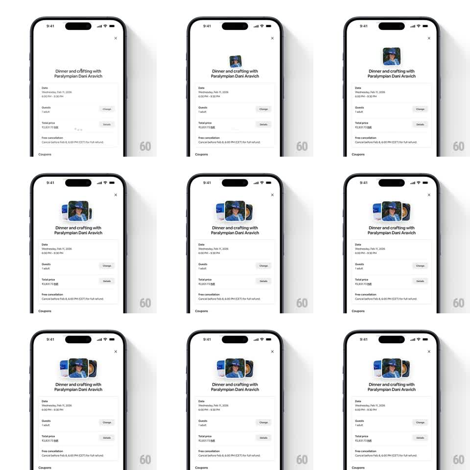

Media
Frame-by-frame

Rebuild this animation 1:1: Airbnb's booking-sheet photo pop - a small photo stack pops in above the title, the top photo rotating and sliding aside to reveal a fanned trio.

Rebuild this animation 1:1: Airbnb's booking-sheet photo pop - a small photo stack pops in above the title, the top photo rotating and sliding aside to reveal a fanned trio. ## Integration Integration: stack-agnostic spec - springs given as stiffness/damping, timed motions as duration + curve; map every value to your framework and animation library of choice. ## Scene Airbnb booking sheet, white: "Dinner and crafting with Paralympian Dani Aravich" with Date / Guests / Total price rows below. Above the title: a stack of rounded-corner photos that starts as one small card and ends fanned as three. ## Motion spec Pattern: photo stack pop and fan. - On sheet open, the top photo pops in at center above the title: scale 0 -> 1 with spring ~350/14 (clear overshoot), starting upright. - 150ms later it rotates -8deg and slides left (translateX -55px, 300ms ease-out), revealing the second photo beneath, which pops the same way and fans right (+8deg, +55px). - The third photo stays centered and upright, ending slightly larger than the other two - a three-card fan. - Each card has a soft shadow that grows as it lifts; shadows settle with the springs. - The fan holds; on pull-to-dismiss, the cards collapse back into the stack in reverse order (200ms each). ## Calibration - Cards are small (~64px) with ~10px corner radius - thumbnails, not heroes. - The fan is symmetric around the sheet's center axis above the title. ## Reduced motion The trio fades in already fanned (250ms). ## Don't miss - The pop is per-card with its own spring - they never move as a group. - The title and price rows below stay perfectly still during the fan.